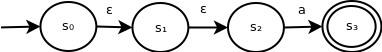

Background
We've seen the method of constructing ε-NFAs from regular expressions. However, using an ε-NFA to recognize a string is tricky. We will look at a method to convert ε-NFAs to NFAs.
Removing ε-transitions
Observe the following ε-NFA:

This recognizes the string "a". Because the ε-transition doesn't consume an input symbol, it can be simplified to the following:

Similarly, the following ε-NFA recognizes the same language:
When we are converting an ε-NFA into an NFA, whenever we have a sequence of ε-transitions linking state s1 through sn - 1, followed by a transition with input symbol σ from state sn - 1 to state sn, we can replace it with a two-state construction of state s1 to sn - 1 with input symbol σ.
Making states accepting
Observe the following ε-NFA:
This recognizes the string "a". Because the ε-transition doesn't consume an input symbol, it can be simplified to the following:

Similarly, the following ε-NFA recognizes the same language:
When we are converting an ε-NFA into an NFA, whenever we have a sequence of ε-transitions linking state s2 through sn following a transition with input symbol σ from state s1 to state s2, we can replace it with a two-state construction of state s1 to sn - 1 with input symbol σ.
Summary
Following the above rules, we can convert an ε-NFA into an NFA, removing all ε-transitions. However, we may still have states with multiple transitions corresponding to the same symbol.
More complex example

Using the same rules as above, this can be reduced into the following NFA (which happens to, by chance, also be a DFA):
GitHub Repository: https://github.com/bprollinson/ripal
Copyright © 2017 Brendan Rollinson-Lorimer